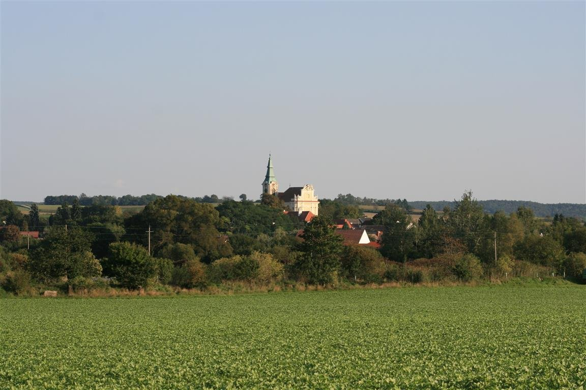

Weinviertel · Niederösterreich
Pfarre Aspersdorf
Rund drei Kilometer nördlich von Hollabrunn betreut das Augustiner-Vikariat Wien auch die Pfarre Aspersdorf mit der Pfarrkirche St. Georg — eine zweite, eigenständige Gemeinde im Weinviertel.
Leitung der Pfarre
Die Pfarre Aspersdorf wird seit 2002 von P. Mag. Dominic Sadrawetz OSA als Moderator geleitet. Er gehört dem Augustinerorden an und lebt im Augustinerkloster Wien an der Hofburg, wo er zugleich als Prior der Augustinerklöster in Wien und im bayerischen Zwiesel wirkt.
Die Pfarre gehört zur Erzdiözese Wien, Dekanat Hollabrunn, Vikariat Nord „Unter dem Manhartsberg" und zählt rund 437 Katholikinnen und Katholiken in Aspersdorf und Wieselsfeld.
Pfarrkirche St. Georg

Die Pfarrkirche St. Georg erhebt sich im Süden des Ortes über dem Pfarrfriedhof und den Weinkellern Aspersdorfs. Im Kern eine gotische Chorturmkirche, wurde sie nach 1718 unter der Leitung des bedeutenden Barockarchitekten Johann Lukas von Hildebrandt (1668–1745) zur spätbarocken Saalkirche umgestaltet und am 25. September 1730 neu geweiht.
Die Kirche zählt zu einer Gruppe Schönborn'scher Patronatskirchen, die Hildebrandt im Weinviertel umgestaltete — gemeinsam mit Göllersdorf, Großstelzendorf, Stranzendorf und Weyerburg. Schutzpatron der Pfarrkirche ist der Hl. Georg, dessen Fest am 23. April gefeiert wird.
In Wieselsfeld, dem zweiten Ort der Pfarre, steht zudem die kleinere Kapelle Heiligste Dreifaltigkeit, in der etwa einmal monatlich außerhalb der Sommermonate die Heilige Messe gefeiert wird.
Der Hl. Georg lebte im 3. Jahrhundert vermutlich in Kappadokien und starb um 305 als Märtyrer unter den Kaisern Diokletian und Maximian. Berühmt ist die Legende, wie er die Stadt Silena in Libyen von einem Drachen befreite, der zuvor Menschenopfer gefordert hatte — und die Bevölkerung daraufhin zum christlichen Glauben fand. Georg ist Schutzpatron unter anderem von England, Georgien und Tirol sowie von Soldaten, Landwirten, Pferden und Gefangenen. Ein altes Sprichwort verbindet ihn mit dem Frühling: „St. Georg kommt nach alten Sitten auf dem Schimmel angeritten."
Die Pfarrkirche besitzt sieben Glocken. Das Hauptgeläut umfasst sechs Bronzeglocken: die Dreifaltigkeitsglocke (1.500 kg, Grassmayr 2010), die Georgsglocke (890 kg, Pfundner 1969), die Augustinusglocke (635 kg, Grassmayr 2010), die Marienglocke (380 kg, Pfundner 1969), die Emmausjünger-Glocke (260 kg, Grassmayr 2010) und die Franziskusglocke (185 kg, Pfundner 1969). Dazu kommt als siebte, gusseiserne Glocke die Sterbeglocke (130 kg, Weule 1917). Die drei jüngsten Glocken wurden am 23. April 2010 gegossen und am 26. Juni 2010 gemeinsam geweiht.
Interessierte können die Pfarrkirche St. Georg im Rahmen einer Führung kennenlernen — von der gotischen Chorturmanlage über die barocke Umgestaltung durch Johann Lukas von Hildebrandt bis zu den Glocken. Anfragen nimmt das Pfarramt Aspersdorf entgegen.
Gottesdienste & Kalender
| Sonntag | 08:30 | Heilige Messe Pfarrkirche St. Georg, Aspersdorf |
| Samstag | 18:00 | Vorabendmesse in der Regel 1. und 3. Samstag im Monat, anstelle der Sonntagsmesse |
| Mittwoch | 18:00 | Heilige Messe monatlich, außer Juli/August — abwechselnd in Wieselsfeld |
| Mittwoch | 17:30 | Beichtgelegenheit vor den Werktags- und Vorabendmessen |
Das PV-Magazin des Pfarrverbands sowie Aushänge in der Pfarre informieren laufend über Gottesdienstzeiten an Feiertagen, Sondertermine und Ankündigungen aus dem Pfarrleben von Aspersdorf.
Sakramente in Aspersdorf
Taufe, Eucharistie und Erstkommunion, Firmung, Buße, Trauung, Weihe, Krankensalbung und die Begleitung im Sterbefall werden auch in der Pfarre Aspersdorf gespendet. Für Termine und Vorbereitung wenden Sie sich an das Pfarramt Aspersdorf.
Wiedereintritt in die Kirche
Auch in Aspersdorf ist der Wiedereintritt in die Kirche unkompliziert und persönlich möglich. Ein vertrauliches Gespräch mit P. Dominic Sadrawetz OSA oder dem Pfarramt genügt als erster Schritt.
Dienste & Mitarbeiter
Lektorinnen und Lektoren, Mesnerdienst, Ministrantinnen und Ministranten sowie der Pfarrkirchenchor tragen das liturgische Leben der Pfarre mit. Wer sich engagieren möchte, wendet sich an das Pfarramt Aspersdorf oder direkt an P. Dominic Sadrawetz OSA.
Katholische Frauenbewegung
Die Ortsgruppe der Katholischen Frauenbewegung (kfb) gestaltet in Aspersdorf regelmäßige Treffen, Andachten und karitative Aktionen mit und ist fester Bestandteil des Pfarrlebens.
Der Pfarrfriedhof
Der Pfarrfriedhof liegt rund um die Pfarrkirche St. Georg im Süden des Ortes, umgeben von den Weinkellern Aspersdorfs.
Friedhofsgebühren
Gebühren für Erwerbung bzw. Erneuerung von Grabstellen für 10 Jahre.
| Wandgräber | |
|---|---|
| Einzelgrab — bis zu 2 Personen | € 125,00 |
| Doppelgrab — bis zu 4 Personen | € 170,00 |
| Reihengräber | |
| Einzelgrab — bis zu 2 Personen | € 100,00 |
| Doppelgrab — bis zu 4 Personen | € 150,00 |
| Kind | € 50,00 |
| Grüfte | |
| Gruft — bis zu 4 Personen | € 930,00 |
| Gruft — bis zu 6 Personen | € 1.200,00 |
| Gruft — bis zu 12 Personen | € 1.500,00 |
Für Auswärtige erhöhen sich die jeweiligen Sätze um 50 %.
Gebühren für Grabdenkmäler
| Grabkreuz | € 20,00 |
| Grabstein bis 2 m | € 70,00 |
| Grabstein bis 3 m | € 100,00 |
| Grabstein über 3 m | € 130,00 |
| Figurale Denkmäler | € 120,00 |
| Denkmalüberdachung | € 50,00 |
| Grababdeckungen | € 120,00 |
| Grabeinfassungen | € 60,00 |
Für Auswärtige erhöhen sich die jeweiligen Sätze um 50 %.
Gebühren für Kranz- und Bukett-Entsorgung
| Kranz | € 4,00 |
| Bukett | € 3,00 |
Für Auswärtige erhöhen sich die jeweiligen Sätze um 50 %.
2020 Aspersdorf
Niederösterreich
Dekanat Hollabrunn